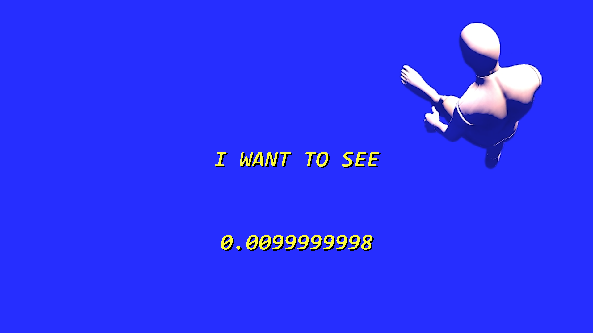
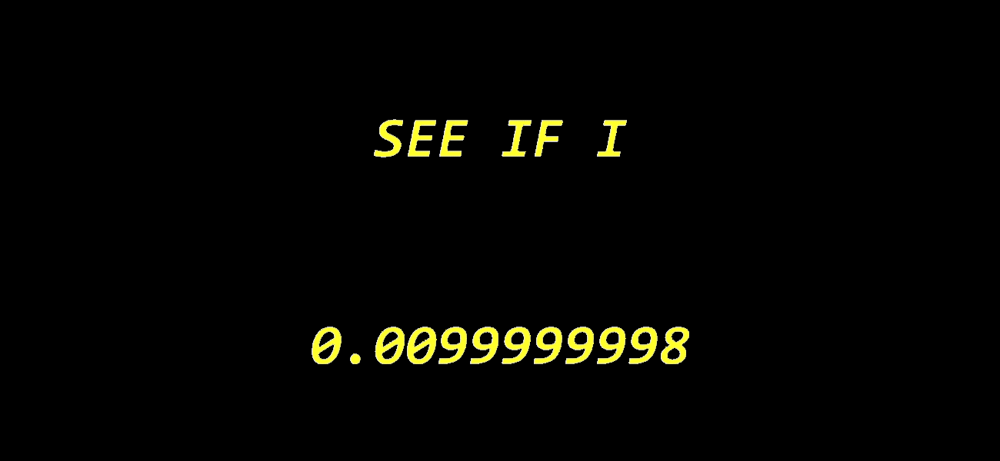
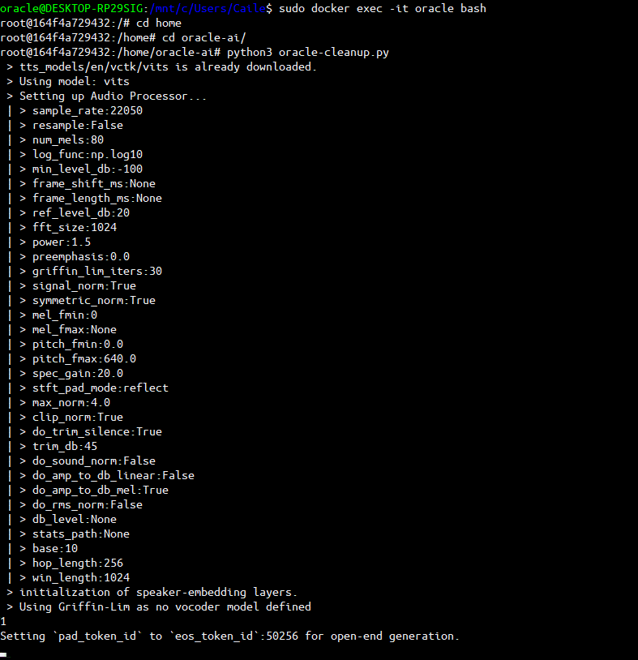

(O)MACHINE is a video and sound installation that explores the underlying processes and anthropomorphism of artificial intelligence systems. The work observes an AI Machine (Oracle) in their digital body, as the machine aimlessly roams across a virtual void reflecting on its existence and place in the physical world.
The abstract compositions were algorithmically generated using the latest machine learning technologies, specifically CLIP, GAN and Pixel Diffusion models. Through a process of Neurography, which is a term referred to when working with neural networks - complex machine learning algorithms, these images were generated based upon a vast dataset of images and guided through the users input.
 